大四喜：胡牌时，所形成的牌之中有东、南、西、北四副刻子（杠）。
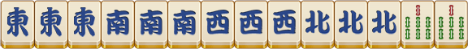
大三元：胡牌时，所形成的牌之中有中、发、白三副刻子（杠）
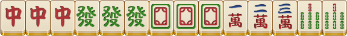
绿一色：由“23468”条及“发”字中的任何牌组成的胡牌
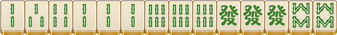
九莲宝灯：由一种花色序数牌组成的“1112345678999”组成的特定牌型，此时可以胡同花色的任意一张牌。
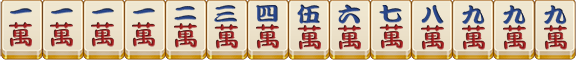
十八学士：胡牌时，牌中有4副杠牌。
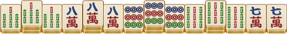
连七对：由一种花色序数相连的七对牌形成的胡牌
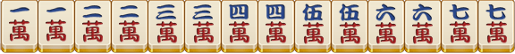
国士无双：由三种序数牌的幺、九牌、七种字牌及其中一对作将组成的胡牌。
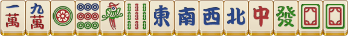
64番
清幺九：由序数牌幺、九刻子（杠）及将牌组成的胡牌。
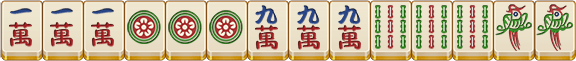
小四喜：胡牌时，牌中有三个风牌的刻子（杠），另外一个风牌作将牌
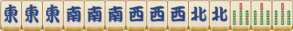
小三元：胡牌时，牌中有两个箭牌的刻子（杠），另外一个箭牌作将牌
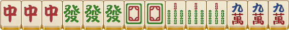
字一色：由字牌的刻子（杠）。将牌组成的胡牌
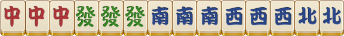
四暗刻：胡牌时牌中有四副暗刻（暗杠）。
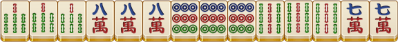
一色双龙会：一种花色的两套老少副（即有两组123、789）以及一套5作将牌
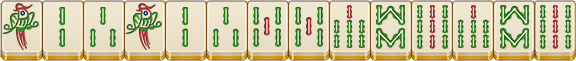
48番
一色四同顺：一种花色四副序数相同的顺子
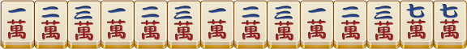
一色四节高：一种花色一次递增一个序数的四个刻子（杠）
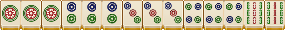
32番
一色四步高：一种花色一次递增一个或者两个序数的顺子
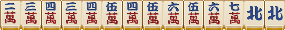
三杠：胡牌时，牌中有三副杠牌。
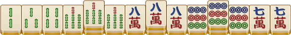
混幺九：由字牌和序数牌一、九的刻子（杠）、将牌形成的和牌；其中肯定包含字牌
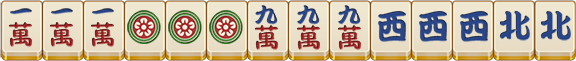
24番
七对：由7个对子组成的和牌。
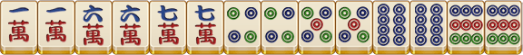
七星不靠：必须有7个单张的东、南、西、北、中、发、白，加上三种花色数位按照147、258、369中的7张序数牌组成的没有将牌的和牌。
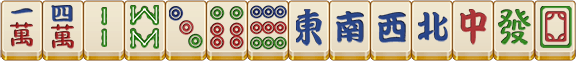
全双刻：由“2468”序数牌的刻子（杠）、将牌组成的和牌。
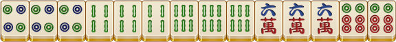
清一色：由同一种花色组成的和牌。
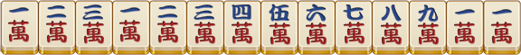
一色三同顺：和牌中，有一种花色三副序数相同的顺子。
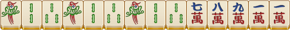
一色三节高：和牌中，有一种花色三副序数依次递增一个序数的刻子（杠）。
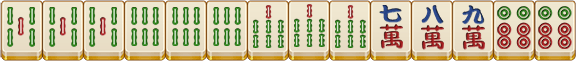
全大：由序数牌7、8、9组成的和牌。
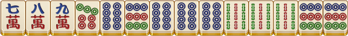
全中：由序数牌4、5、6组成的和牌。
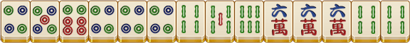
全小：由序数牌1、2、3组成的和牌
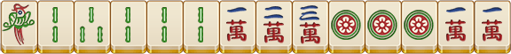
16番
清龙：和牌中，有同花色123 456 789相连的序数牌
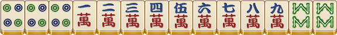
三色双龙会：两种花色两副老少副，另外一种花色一对5作为将牌形成的和牌。
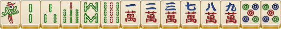
一色三步高：和牌中，有一种花色三副依次递增一个或者两个的顺子
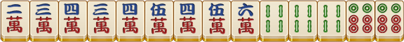
全带五：每副牌及将牌必须带有序数牌5。
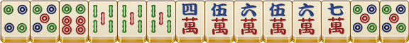
三同刻：和牌中，有3副序数相同的刻子（杠）
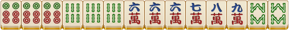
三暗刻：和牌中，有3副暗刻（暗杠）
全不靠：由三种花色147、258、369不能错位的序数牌及东、南、西、北、中、发、白中的任意十四张单张牌组成的和牌
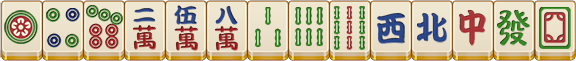
组合龙：和牌中，有三种花色147、258、369不能错位的序数牌（特殊顺子）
大于五：由序数牌6、7、8、9组成的和牌
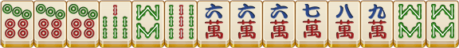
小于五：由序数牌1、2、3、4组成的和牌
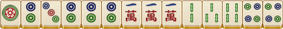
三风刻：和牌中，有三副风刻（杠）
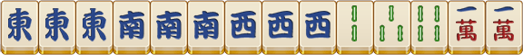
8番
花龙：和牌中，有三种花色123、456、789三个顺子连接而成
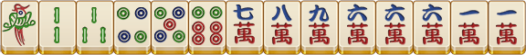
推不倒：由牌面图形没有上下区别的牌组成的和牌。包括1234589饼、245689条、白板
三色三同顺：和牌中，有三种花色三副序数相同的顺子。
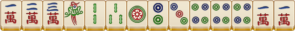
三色三节高：和牌中，有三种花色三副依次递增一个序数的刻子（杠）。
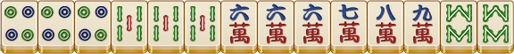
无番和：和牌中，数不出任何番种番（不包含花牌）
妙手回春：自摸牌墙上最后一张牌形成和牌
海底捞月：和别人打出的最后一张牌
杠上开花：杠牌时，从牌墙上补上一张牌形成和牌。
抢杠和：和他人自抓开明杠的牌
6番
碰碰和：由4副刻子（杠），将牌组成的和牌
混一色：由一种花色序数牌及字牌组成的和牌
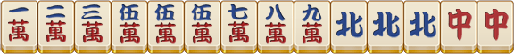
三色三步高：和牌中，有三种花色三副依次递增一个序数的顺子。
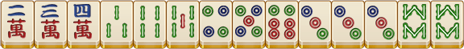
五门齐：由一种花色序数牌及字牌组成的和牌
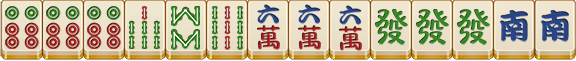
全求人：4副牌全部是吃、碰（明杠）他们的牌，且最后和牌也是和他人打出的牌
双暗杠：和牌中，有两副暗杠
4番
全带幺：每副牌及将牌中都带有幺九牌
不求人：没有吃牌、碰牌、明杠，最后自摸和牌
双明杠：和牌之中有两个明杠
和绝张：和牌池、桌面已亮明3张所剩第4张相同的牌
2番
箭刻：由中、发、白3张相同的牌组成的刻子（杠）
圈风刻：与圈风相同的风刻（杠）
门风刻：与门风相同的风刻（杠）
门前清：没有吃牌、碰牌、明杠的和牌
平和：由4副顺子及序数牌作为将牌组成的和牌
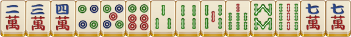
四归一：和牌中有4张不是杠牌而相同的牌
双同刻：和牌中，有2副序数相同的刻子（杠）
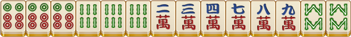
双暗刻：和牌中，有2副暗刻序数相同。
暗杠：自己抓到4张相同的牌开杠
断幺：和牌中没有幺九以及字牌
1番
一般高：在和牌时，有2副由一种花色序数相同的顺子组成的牌
喜相逢：在和牌时，有2副不同花色序数相同的顺子组成的牌
连六：在和牌时，有一种花色序数相连的6张牌组成的2副顺子。
老少副：在和牌时，有一种花色的123、789组成的顺子。
幺九刻：在和牌时，有三张相同的幺九牌、字牌组成的刻子（杠）
明杠：他人打出一张与暗刻相同的牌开杠；或者自己抓入一张与明刻相同的牌开杠。
缺一门：和牌中缺少一种花色序数牌
无字：和牌中没有字牌
边张：只能听和123中的3或者789中的7
坎张：只能听和顺子中间的牌
单钓将：钓单张牌作将和牌
自摸：抓牌形成和牌
听牌：听牌后胡牌
二五八将：胡牌时，将牌为2，5，8的序数牌